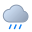

모델 예보
서산의 지금
--°
날씨 불러오는 중체감 --°
↑ 최고 --°↓ 최저 --°

강수확률
--%풍속
--습도
--%자외선
--일출·일몰 확인 중
예보 데이터를 연결하고 있습니다.
LIFE-WEATHER INTELLIGENCE
비가 올까? 보다 중요한 건, 언제 무엇을 하면 좋을까?

강수확률
--%풍속
--습도
--%자외선
--기상 데이터를 불러오고 있습니다.
날씨를 분석하고 있습니다.
48시간부터 7일까지 비와 맑은 시간, 기온·바람 변화를 비교하세요.
기간을 바꾸면 비가 오는 시간과 맑은 낮 시간을 다시 계산합니다.
예보 연결 중…
예보 분석 중…
예보 분석 중…
강수확률 50% 이상 또는 시간별 강수량 0.3mm 이상을 비 가능성으로 표시합니다. 단기 소나기·국지성 강수는 실제 현장과 차이가 날 수 있습니다.
날짜를 누르면 자외선·일몰·강수량 상세가 열립니다.
앞으로 48시간의 기온·비·바람·습도로 활동별 적합 시간을 계산합니다.
데이터를 연결하고 있습니다.
안내용 참고값입니다. 농약 방제는 등록약제 사용기준과 현장 풍속·풍향을 우선하세요.
강수·돌풍·저온 위험을 종합하는 중…
Android 앱은 저장한 지역의 예보를 약 15분 주기로 확인합니다. 웹에서는 앱을 열었을 때 확인합니다.
‘비 가능성 낮음’은 별도 확률을 만들지 않고, 향후 6시간의 각 시간별 강수확률이 선택 기준 이하인지 확인합니다. 맑음은 낮 시간의 하늘 상태·강수확률·예상 강수량을 함께 봅니다.
저장하기 전에는 백그라운드 알림이 시작되지 않습니다.
Android 시스템 절전 상태에서는 실행 시각이 늦어질 수 있습니다.
대기질 모델의 예측값입니다. 환경부 측정소 실측값과 다를 수 있습니다.
미세먼지 예측 정보를 불러옵니다.
각 도시를 눌러 날씨를 비교하고 바로 해당 지역 예보로 이동하세요.
지도·GPS 주변 주소 © OpenStreetMap contributors · 날씨 데이터 © Open-Meteo.com